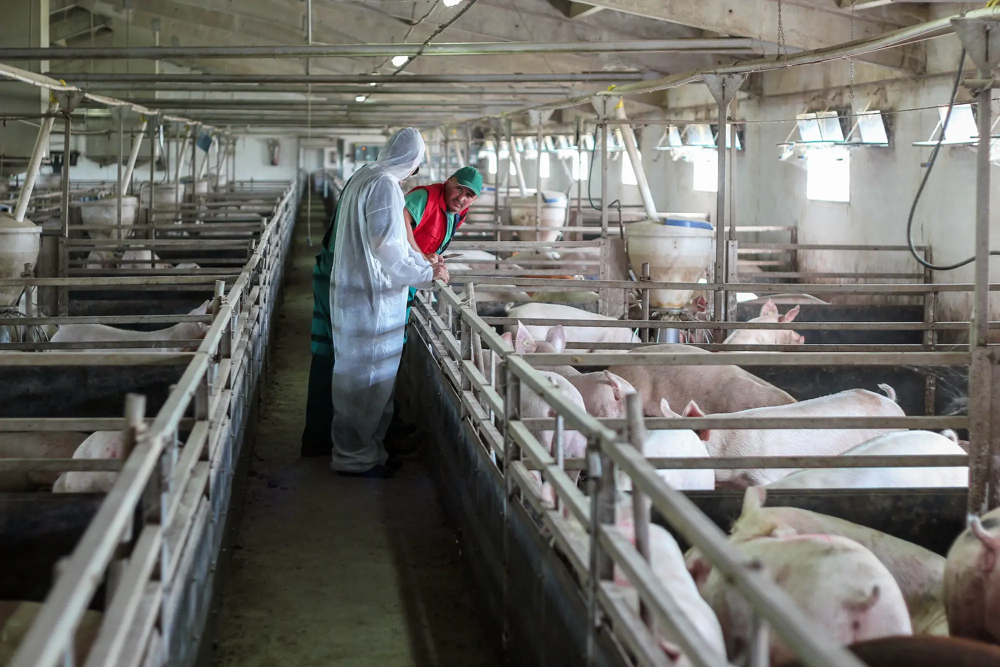
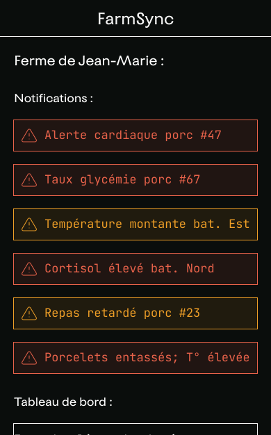
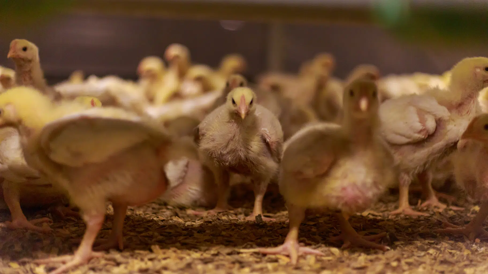

03
Tout sonne, donc rien n’alerte.
L'implant analyse le sang en temps réel. Plus de rendez-vous vétérinaire, plus d'attente. Mais quand la biologie fluctue et l'algorithme sonne en boucle, l'éleveur finit par couper le son.

"Au début, je regardais chaque alerte. Le sang de la #7 en temps réel, c'est fascinant. Puis les notifications ont commencé à s'emballer; glycémie, rythme cardiaque. Tout sonnait. J'ai compris que le tracteur qui passe trop près pouvait déclencher une alerte cardiaque. Après trois semaines, j'avais coupé les notifications."
Jean-Marie P. — Eleveur porcin, VielsamLa promesse tenue
L'idée est révolutionnaire et réelle; un implant qui analyse le sang en continu. Glycémie, hémoglobine, taux de cortisol, marqueurs inflammatoires. Pas de rendez-vous vétérinaire planifié, pas d'attente de résultats et surtout, pas de frais de consultation. L'éleveur sait, en temps réel, si une bête développe une carence ou une infection naissante.
Le gain est concret en temps, coût, et surtout précocité du diagnostic. Une maladie détectée 48 heures plus tôt peut faire la différence entre un traitement simple et une perte.
Cependant, cela a un coût. Une pose d’implant coûte entre 4 et 5 euros. Si Jean-Marie peut se le permettre, ce n’est pas le cas de toutes les exploitations.

Qui sera prêt à payer le prix d'une viande dont chaque battement de cœur a été archivé ?
Du bruit en continu
Mais la biologie est faite de fluctuations. Un animal stressé par le passage d'un tracteur voit son cortisol monter, son rythme cardiaque s'emballer. L'implant réglé sur des seuils trop stricts génère un bruit numérique permanent. Alerte glycémie. Alerte cardiaque. Alerte température. Puis encore une alerte.
Jean-Marie a vécu ce que les médecins de soins intensifs connaissent bien, la fatigue de l'alerte. Quand tout sonne, le cerveau décroche. Les notifications sont ignorées et y compris, potentiellement, la seule qui comptait vraiment.
Plus grave encore est l'impasse économique sur le poulet. La durée de vie d'un poulet de chair est de 60 jours. Le coût de l'implant, de sa pose et de son recyclage à l'abattoir dépasse la marge bénéficiaire de l'animal. Le modèle économique s'effondre avant même de commencer.

-
Ce que FarmSync apporte
- Analyse sanguine en continu sans prélèvement ni stress pour l'animal
- Détection précoce de maladies et carences 24 à 48h avant les symptômes visibles
- Réduction des visites vétérinaires planifiées
- Historique biométrique complet par animal
-
Les problématiques
- Les seuils d'alerte trop stricts génèrent un bruit numérique invivable
- La fatigue de l'alerte neutralise le bénéfice du système
- Économiquement non viable sur les espèces à cycle court (poulet)
- Risque de fracture : élevage de luxe vs petit élevage local